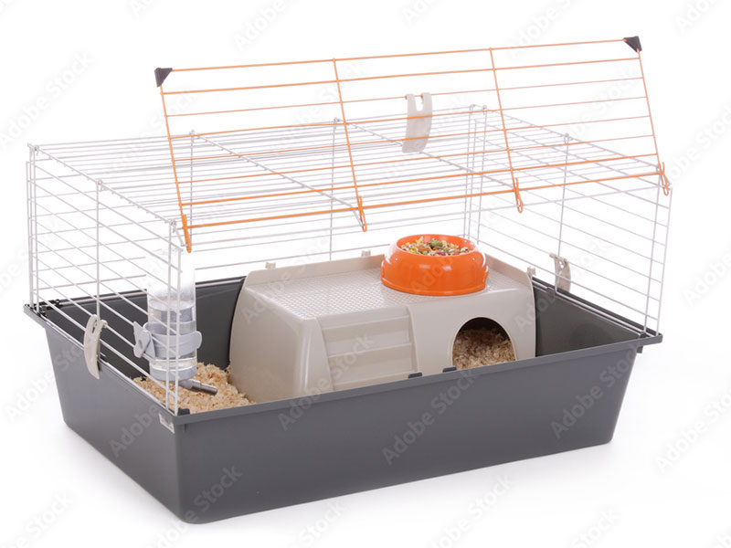
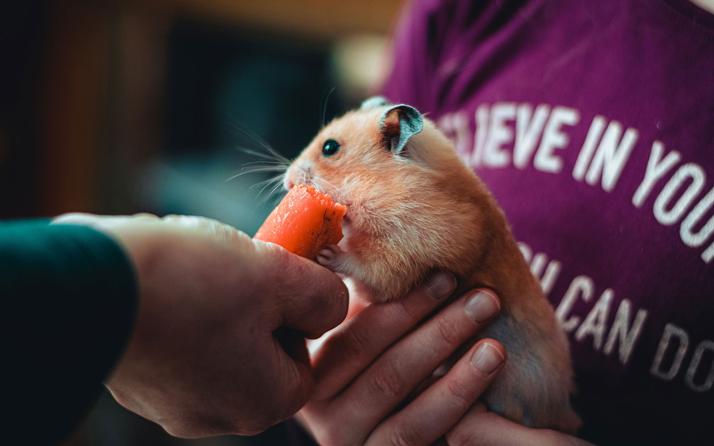
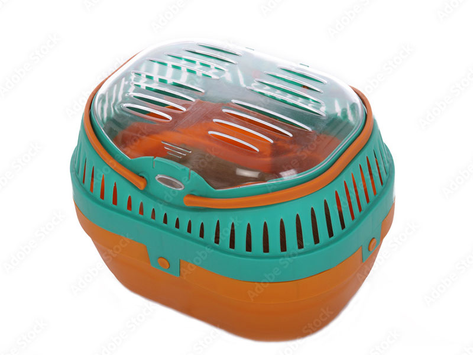
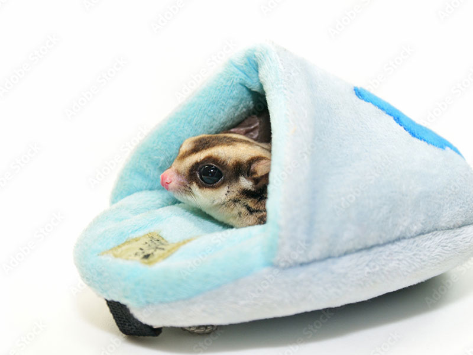

その子に合った小さな「おうち」づくり
種類ごとに適したケージサイズやレイアウトを大切にしています。 隠れ家や巣材、餌箱の位置など、落ち着ける居場所を考えながら、 小さな体に無理のない暮らし方をご提案します。
tiny paws market
ABOUT
tiny paws market は、「小さな相棒たち」との出会いをお手伝いする
小動物専門のオンラインペットショップです。
どの子も、ただの「ペット」ではなく、これから家族になる存在として、
ひとつひとつの命と向き合いながらお迎えのサポートをしています。

小さな体の子たちが、できるだけ自然に、安心して暮らせるように。 私たちは「環境づくり」「お迎えのサポート」「その後の暮らし」の3つを軸に考えています。

種類ごとに適したケージサイズやレイアウトを大切にしています。 隠れ家や巣材、餌箱の位置など、落ち着ける居場所を考えながら、 小さな体に無理のない暮らし方をご提案します。

お迎えのときや通院など、外へ出るタイミングでも、 できるだけストレスを減らしてあげられるように。 体格や性格に合わせたキャリーケース選びもお手伝いします。

クッション型のベッドや、もぐりこめるタイプのおうちなど、 種類や季節に合わせて、ぴったりの寝床をご紹介します。 安心できる場所があることは、小さな心の大きな支えになります。